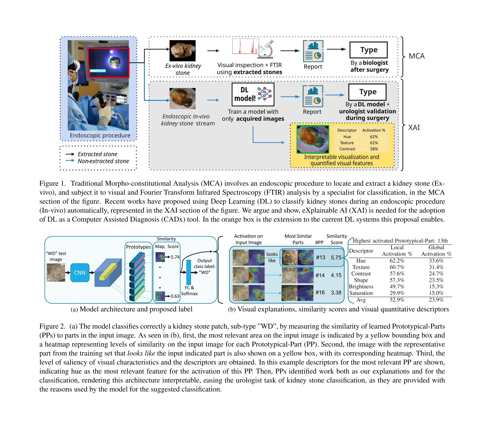
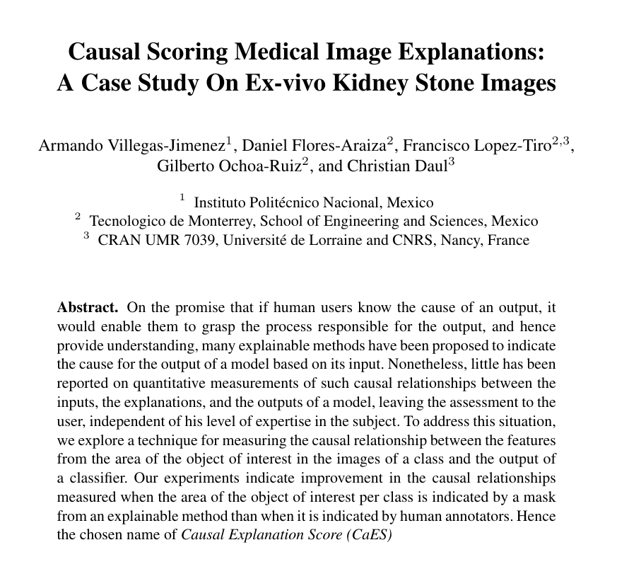
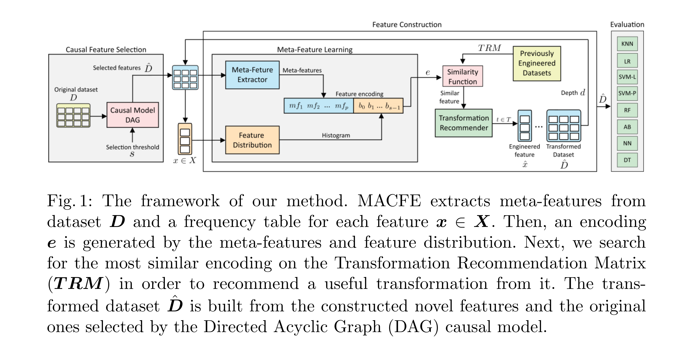
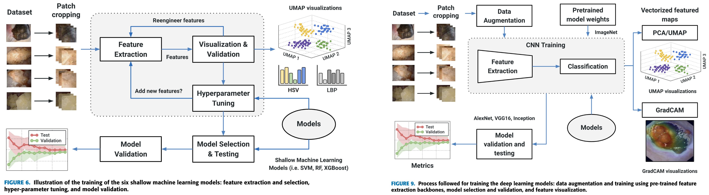
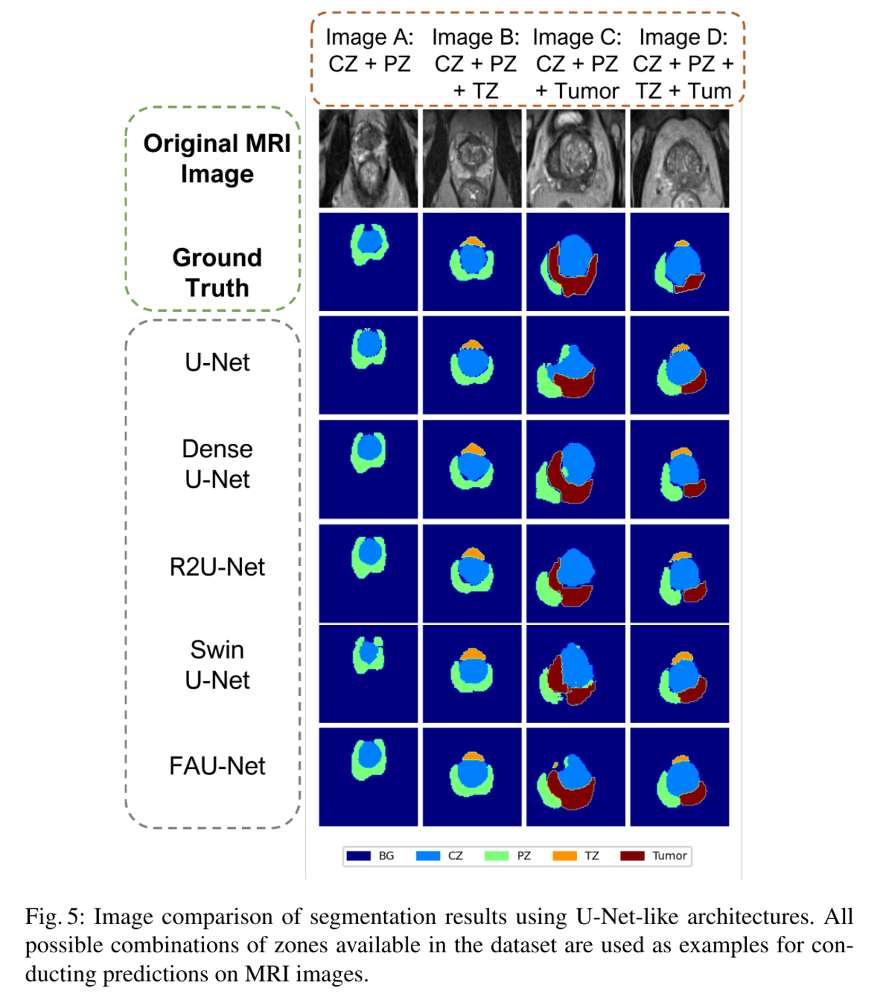
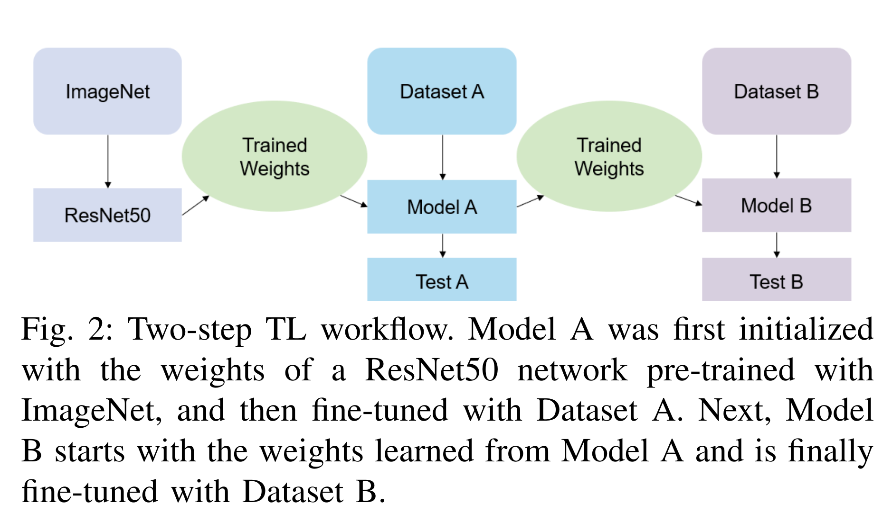
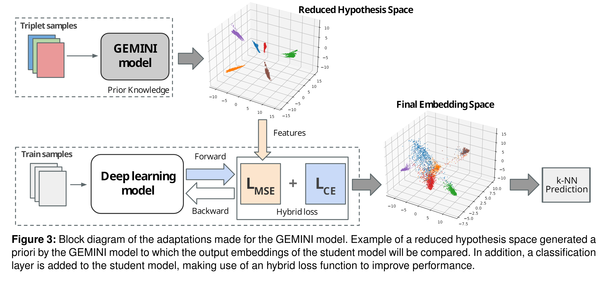
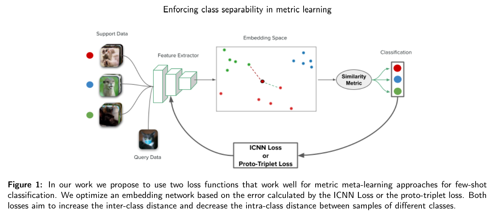

Research Publications
15+ peer-reviewed publications · Best Paper @ CVPR 2022 · View on Google Scholar ↗

XAI · CVPR 2023
Deep Prototypical-Parts Ease Morphological Kidney Stone Identification and Are Competitively Robust to Photometric Perturbations
Read Paper →
Causality
Causal Scoring Medical Image Explanations: A Case Study On Ex-vivo Kidney Stone Images
Read Paper →

Medical Imaging · IEEE
On the In Vivo Recognition of Kidney Stones Using Machine Learning
Read Paper →
Medical Imaging
FAU-Net: An Attention U-Net Extension with Feature Pyramid Attention for Prostate Cancer Segmentation
Read Paper →
Medical Imaging
Boosting Kidney Stone Identification in Endoscopic Images Using Two-Step Transfer Learning
Read Paper →

Metric Learning
SuSana Distancia is all you need: Enforcing Class Separability via Two Novel Distance-Based Loss Functions for Few-Shot Classification
Read Paper →